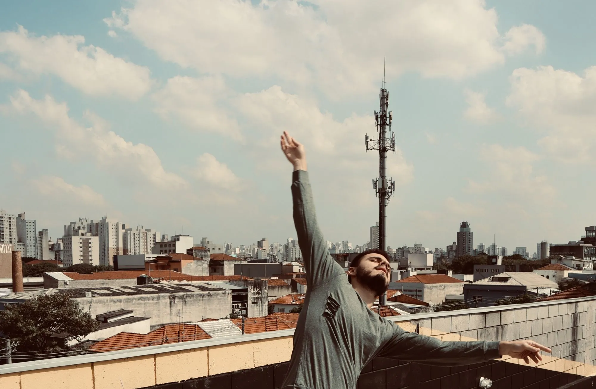

Marcus Moreno
About

Marcus Moreno holds a master's degree in Performing Arts from Unicamp. With a bachelor's degree in Communication of the Body Arts, he specialised in the Klauss Vianna Technique (PUC-SP) and trained as a theatre teacher at Universidade Anhembi Morumbi. He moves through poetic fields, investigating temporalities, stage improvisation and the making of networks of affection.
Read moreShow less
Since 2012 he has created stage works, always seeking out partners, and has developed projects involving the production of works and cultural events, as well as training and audience engagement. His stage works include A Imagem como Ausência (ProAC/2013), A Flor da Lua (Casa das Caldeiras Artist Residency/2016), Estudo para o Encontro (ProAC/2017), Instante-já (Fomento à Dança/2019), created with Uruguayan artist Andrea Arobba and nominated for the APCA Dance Award as Premiere of the Year and for the Technical Award for lighting and stage design; Entre-espaço onde tudo existe (a dance film conceived with Pri Magalhães/Nome Filmes) and Sempre mais que um, both produced with support from Fomento à Dança in 2022; and Onde Houver Céu, also nominated for the APCA Award.
Since 2016 he has developed the Ephemeral Encounters, improvisation works with artists from the contemporary scene. In 2022, through research at Unicamp's graduate programme in Performing Arts, he created, with Marisa Lambert and Mariana Molinos, the Performative Interviews, an audiovisual series on improvisation and affection recorded with artists such as Zélia Monteiro, Mariana Muniz, Key Sawao, Alex Ratton, Wellington Duarte and Vera Sala. He is a member of the research group Practice as Research: processes of contemporary performance production (PPGAC | IA Unicamp). He has led workshops, artist residencies and talks in a range of cultural venues.
In cultural management, he worked at São Paulo's Municipal Department of Culture (2009-2017), where in his last four years he coordinated the city's Municipal Dance Fund programme; he took part in creating and setting up the Dance Reference Centre and in curating the Municipal Culture Circuit. He has joined management meetings at international events such as Festival Danzalborde (CL), FIDCU (UY) and EGA (AR). He worked on the training programme for the interior of the São Paulo State Cultural Workshops (2017-2019), was cultural programmer of the Oswald de Andrade Cultural Workshop from 2020 to 2024, was part of the outreach and dissemination team of the Fábricas de Cultura, and is currently Strategic Planning Adviser at Instituto Poiesis.
Career
From 2009 to today
Creation, management and research, one year after another.

- 2009–2017
São Paulo Municipal Department of Culture. Coordinates the Municipal Dance Fund in his last four years there; helps create and set up the Dance Reference Centre and curates the Municipal Culture Circuit.
- 2012
First stage works.
- 2016
The Ephemeral Encounters begin: improvisations with artists from the contemporary scene.
- 2017–2019
Training programme for the interior, São Paulo State Cultural Workshops.
- 2020–2024
Cultural programmer at the Oswald de Andrade Cultural Workshop.
- 2022
Creates the Performative Interviews with Marisa Lambert and Mariana Molinos, at Unicamp's graduate programme in Performing Arts.
- 2025
Master's in Performing Arts from Unicamp with the dissertation Estudos do presente: afeto e improvisação cênica.
- Today
Strategic Planning Adviser at Instituto Poiesis. Was part of the outreach and dissemination team of the Fábricas de Cultura.
International management meetings Festival Danzalborde (Chile) · FIDCU (Uruguay) · EGA (Argentina)
Curatorial projects
-
2019
Geopoéticas do Sul (Southern Geopoetics)
Latin American Meeting of Dance Managers
-
2022
Solos Brasileiros (Brazilian Solos)
Dances for Villa-Lobos
-
2023 · 2025
muDANÇA
University showcase
-
SMC · SP
Municipal Culture Circuit
Curated with São Paulo's Municipal Department of Culture
